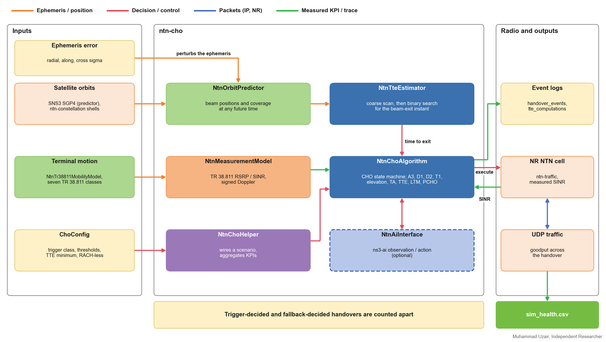
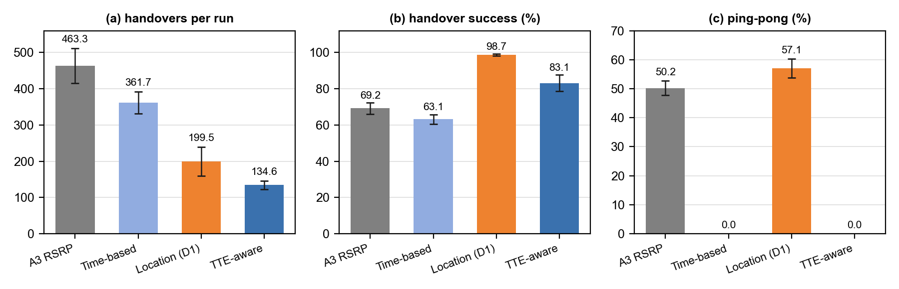
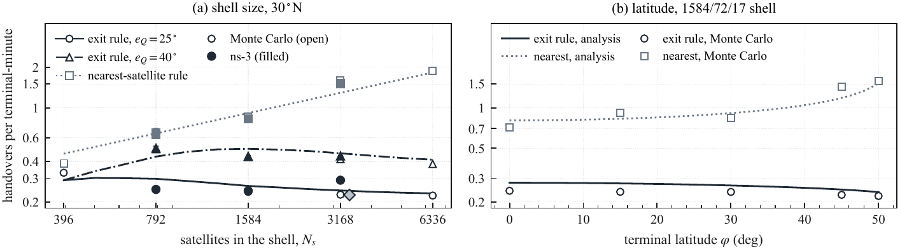

ntn-cho
Conditional handover for LEO: time-to-exit estimation from the ephemeris and the full standardized NTN trigger set


Toolkit | Docs | Install | Examples | Results
Source
This page mirrors contrib/ntn-cho/README.md. Figures are regenerated by the make_*.py scripts in contrib/ntn-cho/doc/figures/.
Why this module¶
A LEO satellite is a cell that leaves. Terrestrial handover logic asks which neighbor looks best right now, and in orbit that question often answers itself wrongly: the best-looking neighbor is frequently the one about to set. This module estimates time to exit, how long a candidate will still be serviceable, from propagated orbits, and conditions the handover decision on it.
The standardized trigger set is implemented rather than approximated: TS 38.331 CondEvent A3, D1 on a fixed reference location, T1 on its absolute broadcast window, and Rel-18 D2 on a moving ephemeris reference, plus the elevation and timing-advance mechanisms that TR 38.821 studies. Each evaluates its own condition against live geometry, so they fire at different times. On the shipped two-cell pass, D2 and TA fired at 8 s, D1 at 69 s, A3 at 81 s, T1 at 125 s and elevation at 248 s, when the serving satellite finally reached the 10 degree floor.
A firing trigger does not always perform the cell change. ntn-cho-handover-traffic reports trigger-decided and fallback-decided handovers separately; on that pass five of the six classes fired without deciding a handover, because the vendored NR A3-RSRP and X2 machinery had already moved the terminal, and only D2 decided one. The counts are kept apart so that the CHO layer is never credited with a cell change the radio would have made on its own.
System design¶

Figure 1. Classes of ntn-cho. The orbit predictor propagates the (optionally perturbed) ephemeris; the TTE estimator searches for each candidate's beam-exit instant; the measurement model and the measured SINR of a real NR NTN cell feed NtnChoAlgorithm, which executes on the cell and logs every decision. Source: ../media/ntn-cho/make_architecture.py.
| Class | Header | Role |
|---|---|---|
NtnChoAlgorithm |
model/ntn-cho-algorithm.h |
Rel-17 CHO state machine (CHO_IDLE, CHO_PREPARED, CHO_CONDITION_MONITORING, CHO_EXECUTING, CHO_COMPLETED) with trigger classes TRIGGER_EVENT_A3, TRIGGER_LOCATION_D1, D2 (moving reference, TS 38.331 Section 5.5.4.15a), TRIGGER_TIME_T1, TRIGGER_ELEVATION, TRIGGER_TIMING_ADVANCE, TRIGGER_TTE_AWARE, TRIGGER_LTM_CONDITIONAL (Rel-19 conditional LTM), TRIGGER_TRAJECTORY_PREDICTIVE. combineWithA4 enforces the Rel-17 rule that T1, D1 and D2 are configured with the A4 leg. Optional RACH-less execution from ephemeris TA pre-compensation. GetMechanismStats() reports LTM switches, PCHO triggers, RACH-less and RACH executions, interruption. |
NtnTteEstimator |
model/ntn-tte-estimator.h |
Time to exit per candidate: a coarse forward scan brackets the exit, then a binary search refines it, both propagating the satellite through time (GetBeamSnapshotAtTime) rather than freezing it at Now(). |
NtnOrbitPredictor |
model/ntn-orbit-predictor.h |
Wraps SNS3 SGP4 mobility and antenna patterns to predict beam positions, coverage and best beams at future times. |
NtnMeasurementModel |
model/ntn-measurement-model.h |
TR 38.811 RSRP and SINR from satellite beams, with signed Doppler. |
NtnTr38811MobilityModel |
model/ntn-tr38811-mobility-model.h |
The TR 38.811 Section 6.1.1.1 UE classes (handheld, pedestrian, vehicular, HST, maritime, aviation, fixed IoT) as an ns-3 MobilityModel in ECEF, plus geodetic, elevation and slant utilities. NtnGeodeticFixedMobilityModel for fixed sites. |
NtnAiInterface |
model/ntn-ai-interface.h |
ns3-ai shared-memory bridge with a candidate-cell observation and action space (optional). |
NtnChoHelper, NtnRealisticMobilityHelper |
helper/ |
Wire a CHO scenario and aggregate KPIs; generate UE populations by TR 38.811 class. |
Signaling scope. CHO is modeled at the decision and timing level. The radio underneath runs the mmwave ideal RRC (bearers set up synchronously) with no over-the-air conditional-reconfiguration PDU, and RACH is latency accounting: the interruption is priced as slant RTT plus processing (2d/c pre-compensation when RACH-less), not a PRACH Msg1 to Msg4 exchange. The core is the LTE EPC with real GTP-U, not a 5GC. Trigger classes and counters are exact and measured; the lower-layer handover protocol is abstracted.
Results¶
Four policies, ten seeds¶

Figure 2. ntn-cho-full-constellation, four policies x ten seeds (40 runs): 66 satellites (6 planes x 11) at 780 km and 86.4 deg, 30 UEs, 600 s, suburban scenario. Bars: mean; whiskers: Student-t 95 % half-width over the ten seeds. Built by ../media/ntn-cho/make_results.py from each run's kpi_summary.txt.
| Policy (ten seeds) | Handovers per run | Success (%) | Ping-pong (%) |
|---|---|---|---|
| A3 RSRP (baseline) | 463.3 ± 47.8 | 69.16 ± 3.06 | 50.23 ± 2.51 |
| Time-based | 361.7 ± 30.3 | 63.14 ± 2.64 | 0.00 |
| Location (D1) | 199.5 ± 40.1 | 98.69 ± 0.48 | 57.07 ± 3.26 |
| TTE-aware | 134.6 ± 11.6 | 83.14 ± 4.59 | 0.00 |
The TTE-aware policy made 71 percent fewer handovers than A3 with no ping-pong, while location-based CHO reached the highest success rate and paid for it with 57 percent ping-pong. Source: papers/sim_runs/ntn-cho/<policy>-seed<k>/ in the toolkit workspace. These runs date from April 2026 and predate later fixes to this module (TTE binary-search refinement on propagated geometry, CSV sentinel handling, the first-handover time of stay), so a rerun with the current code may not reproduce them digit for digit.
Handover rate of the exit-triggered rule¶

Figure 3. Handover rate under line of sight on a 550 km, 53 deg Walker shell (phasing F = 17). (a) Against the number of satellites at 30 deg N; (b) against terminal latitude for 1584 satellites. Lines: analysis; open markers: exact-geometry Monte Carlo; filled markers: ns-3 with ntn-cho-tte-campaign, fresh seeds 11 to 20, 1200 s horizon, 95 % intervals.
From the November 2026 campaign of examples/ntn-cho-tte-campaign.cc (all runs from one recorded binary and frozen libraries; code and data in the toolkit workspace under paper/taes-2026-cho-ephemeris/, runs_nov/ with PROVENANCE.txt, analysis in analysis_nov/ and analysis_rate/): the exit-triggered maximum-service-time rule handed over 0.242 ± 0.004 times per terminal-minute in ns-3 against 0.234 in the exact-geometry Monte Carlo, and the nearest-satellite rule 0.826 against 0.847. The Poisson pass model overstated Walker rates by 4 to 18 percent for shells with enough satellites in view.
Quick start¶
Inside the toolkit, where the module is already present and built:
./ns3 run "ntn-cho-real-stack --trigger=d2 --duration=60"
./ns3 run "ntn-cho-full-constellation --algorithm=tte-aware --simTime=600"
./test.py -s ntn-cho
Standalone, into an existing ns-3.43 tree:
git clone -b main https://github.com/Muhammaduazir69/ntn-cho-framework.git contrib/ntn-cho
./ns3 configure --enable-examples --enable-tests
./ns3 build
INSTALL.md lists the dependencies. The real-stack examples build on ntn-traffic and ntn-constellation, so the toolkit tree is the easiest place to run them.
Examples¶
Binaries land in build/contrib/ntn-cho/examples/.
| Example | What it shows | Command |
|---|---|---|
ntn-cho-real-stack |
TTE-aware CHO (or Rel-19 LTM, or trajectory-predictive CHO) deciding on the measured SINR of a real NR NTN cell while satellites fly SGP4 Walker orbits and UEs move by TR 38.811 class; prints the mechanism counters. | ./ns3 run "ntn-cho-real-stack --duration=60 --trigger=pcho --rachLess=1" |
ntn-cho-handover-traffic |
Real UDP downlink handed over by NtnChoAlgorithm as the serving satellite recedes and its in-plane neighbor approaches; every trigger class selectable; trigger-decided and fallback-decided handovers reported apart. |
./ns3 run "ntn-cho-handover-traffic --simSeconds=60 --trigger=elevation" |
ntn-cho-full-constellation |
Walker constellation, multi-beam satellites, four policies (a3, location, time, tte-aware), CSV and GeoJSON layers per timestep, kpi_summary.txt. |
./ns3 run "ntn-cho-full-constellation --algorithm=tte-aware --numUes=50" |
ntn-cho-tte-campaign |
Constellation-scale system-level campaign: every terminal runs its own NtnChoAlgorithm against every satellite of a Walker shell, with a configurable ephemeris error. Policies a3, d2, t1, elev, tte-eager, mst, tte-cho. |
./ns3 run "ntn-cho-tte-campaign --policy=tte-cho --numUes=100 --simTime=600" |
ntn-cho-leo-basic |
Smoke test: one SGP4 serving satellite, TR 38.811 UEs, real UDP traffic, CHO on a 200 ms cadence with measured SINR. | ./ns3 run "ntn-cho-leo-basic --trigger=tte-aware --simTime=12 --numUes=4" |
ntn-realistic-mobility-demo |
One UE per TR 38.811 class, trajectories written to mobility_trace.csv. |
./ns3 run "ntn-realistic-mobility-demo --simTime=600" |
Tests¶
ntn-choregisters 35 test cases: the algorithm and state machine, D2 trigger, A4 combination and time to trigger, slant-based RACH interruption, RACH-less execution and its timing advance, the standardized triggers, T1 as an absolute window, LTM cadence, TTE estimation and its sigma propagation under ephemeris error, orbit-predictor time offsets and accuracy, exit-triggered selection, and well-formed handover CSVs.ntn-standards-validationregisters 4: SGP4 against Kepler theory, the zenith-pass Doppler envelope, ENU pass geometry, and the elevation and slant relation (about 1932 km at 10 deg for LEO-600).
Dependencies¶
- Required: ns-3.43 and the SNS3
satellitemodule (NtnOrbitPredictoruses its SGP4 mobility and antenna patterns); toolkit modulentn-rrc(linked byCMakeLists.txt). - Examples:
ntn-traffic(NtnRealStackHelper,NtnRealisticTrafficHelper),ntn-constellation(Sgp4MobilityModel,WalkerConstellation), the toolkit'smmwaveandlte. - Optional:
ns3-aiorns3-ai-ntn, only forNtnAiInterface.
Scope and limitations¶
- Decision and timing level CHO over an ideal RRC; no over-the-air conditional reconfiguration and no PRACH procedure (see the signaling note above).
- On short two-cell passes the vendored NR A3 and X2 handover can move the terminal before a CHO trigger trips; read the trigger-decided count, not the total.
ntn-cho-tte-campaignis a system-level simulation in the TR 38.821 Section 6.1 sense: link budget per terminal and satellite on the ns-3 event queue, not a packet-level PHY.- The elevation and TA mechanisms are TR 38.821 study items, not standardized CondEvents.
Standards¶
3GPP TS 38.331 (conditional reconfiguration, CondEvent A3, A4, D1, D2, T1, SIB19), TS 38.300 (handover), TS 38.133 (measurement), TS 38.321 (random access), TR 38.821 (NTN mobility, interruption budget, Set-1), TR 38.811 (UE classes, channel).
Citation¶
If you use this module, please cite the toolkit article:
@article{uzair2026ns3ntn,
author = {Uzair, Muhammad and others},
title = {ns3-ntn-toolkit: An Integrated ns-3 Platform for {6G} Non-Terrestrial Networks},
journal = {IEEE Open Journal of the Communications Society},
year = {2026},
doi = {10.1109/OJCOMS.2026.3745010}
}
License¶
GPL-2.0-only, matching ns-3. See LICENSE.
Contact¶
Muhammad Uzair, Independent Researcher muhammaduzairr69@gmail.com · ORCID 0009-0002-4104-2680
Part of the ns3-ntn-toolkit, an integrated ns-3.43 platform for 6G non-terrestrial network research. Mirrored on GitLab.